Measuring water diffusion in porous materials with high-energy grating interferometry and CdTe detectors
M. Abis, M. Büchner, G. Lovrić, Z. Wang, M. Stampanoni
Institute for Biomedical Engineering, University and ETH Zürich, 8092 Zürich, Switzerland Swiss Light Source, Paul Scherrer Institut, 5232 Villigen, SwitzerlandGoals
- show a simple case for the implementation of a CdTe detector prototype
- latest data not in the abstract: quantitative description of the dark-field signal for a polychromatic source
Efficiency of a 750 μm thick sensor
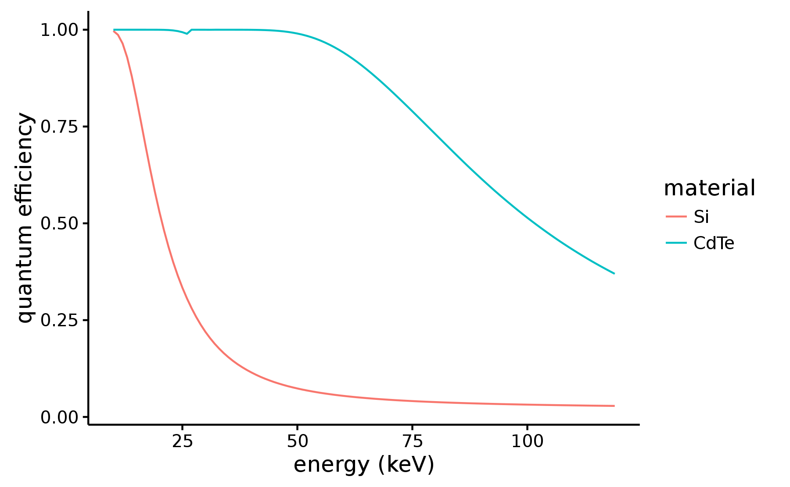The setup
- tube runs at 100 kVp, 6 mA
- \(\pi\) shift at 45 keV
- 5.4 μm pitch
- 52 cm total length
- dectris santis 0804 CdTe prototype
- ~8% visibility
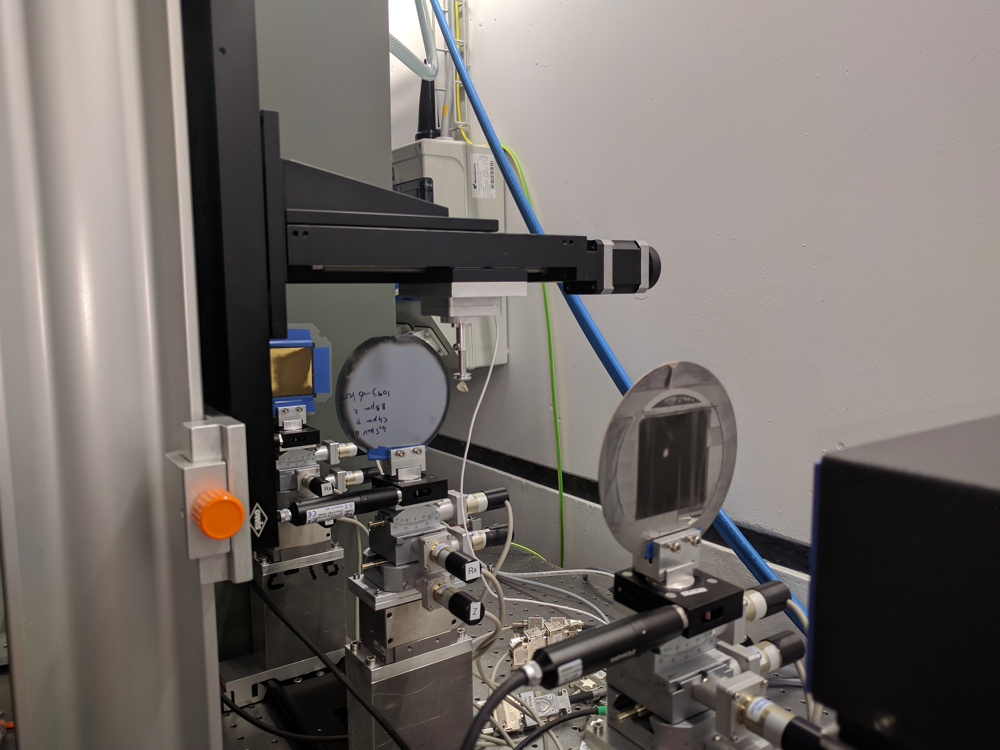
The detector
Prototype based on santis 0804 CdTe from dectris ltd.
- 75 μm pixel size
- 750 μm thickness
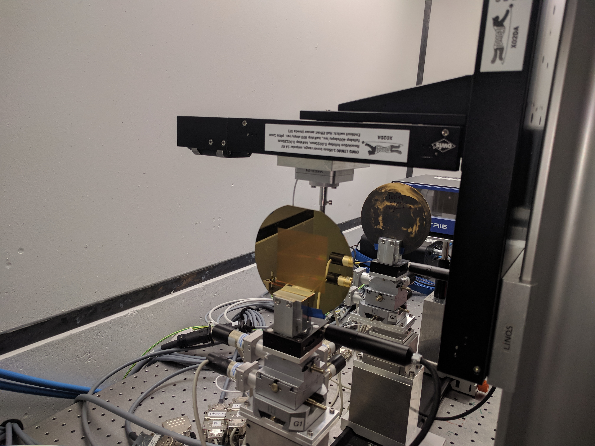
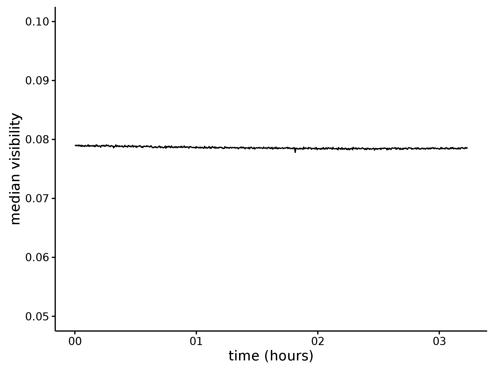
Water uptake in a cement sample
see F. Yang et al., Dark-field X-ray imaging of unsaturated water transport in porous materials, 2014- a cement cylinder is put in contact with water
- the water slowly infiltrates the porous structure
- water height \(\propto \sqrt{t}\)
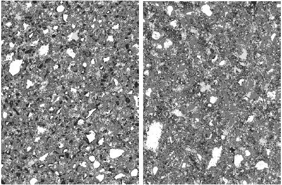
SEM scans of cement
(width 300 μm)
Combining the signals
- transmission \(A\)
- visibility reduction \(B\)
- log ratio \(R = \log(B) / \log(A)\)
Time evolution
Contrast-to-noise ratio


Measuring diffusion speed
thresholding \(\rightarrow\) fraction of wet pixels

Monochromatic case
dark field as a function of sphere diameter and photon energy
S. Lynch et al., Interpretation of dark-field contrast and particle-size selectivity in grating interferometers, 2011
\[
B \propto \mu_d = \frac{3\pi}{\lambda^2}f |\Delta n|^2 d
\begin{cases}
D' & \text{if } D' \leqslant 1\\[2ex]
\!\begin{align}
D' - \sqrt{D'^2 - 1}\\
(1 + D'^{-2}/2) \\
+ (D'^{-1} + D'^{-3} / 4) \\
\log\left(\frac{D' + \sqrt{D'^2 - 1}}{D' - \sqrt{D'^2 - 1}}\right)
\end{align} & \text{otherwise}
\end{cases}
\]
Monochromatic case
dark field as a function of sphere diameter and photon energy
S. Lynch et al., Interpretation of dark-field contrast and particle-size selectivity in grating interferometers, 2011
Polychromatic extension
\[ R(\energy) = \frac{\log B}{\log A} = \frac{\mu_d}{2k\beta} \]
\[ R \propto \frac{\sum_\energy w(\energy)|\Delta n(\energy)|^2 \energy u(\energy)}{\sum_\energy w(\energy) \energy \beta} \]
- \(w\) spectral weights
- \(u\) conditional statement
M. Abis et al., in preparation
Table-top grating interferometer with microspheres

Investigating lung microstructures
- ground truth from synchrotron microtomography
- quantitative data from the table-top setup on a macroscopic scale
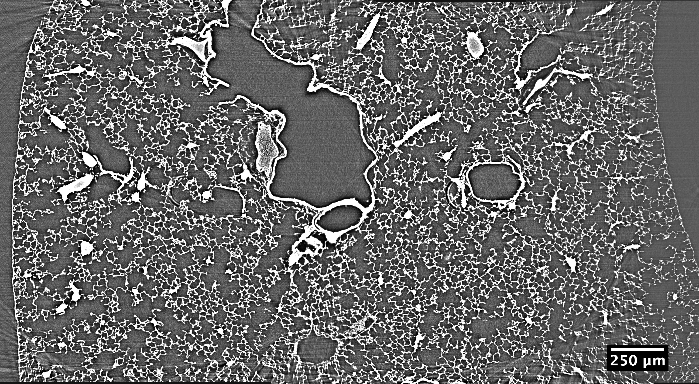
G. Lovrić et al., Dose optimization approach to fast X-ray microtomography of the lung alveoli, 2013
Acquisition of the ground truth
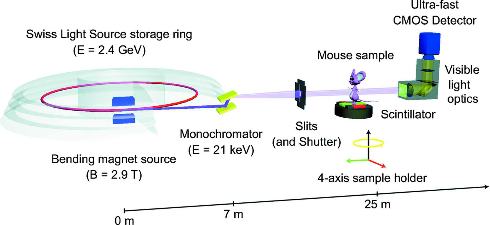
- critical point dried lungs
- tomographic scan at 21 keV
- 1.1 μm effective pixel size
- three mouse samples
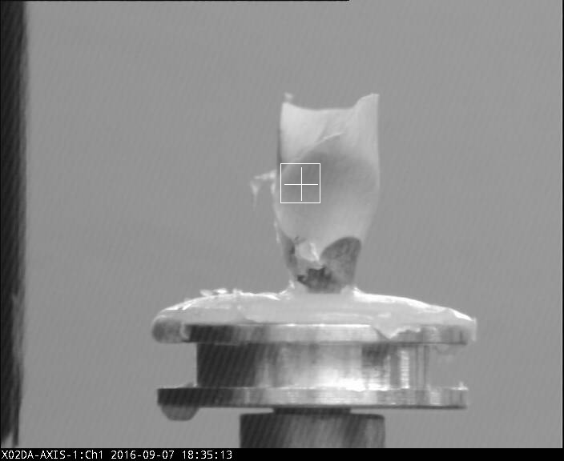
G. Lovrić et al., Dose optimization approach to fast X-ray microtomography of the lung alveoli, 2013
Microtomography and postprocessing
- synchrotron microtomography
- segmentation

G. Lovrić et al., Automated computer-assisted quantitative analysis of intact murine lungs at the alveolar scale, in press 10.1371/journal.pone.0183979
Alveoli as spheres
- fit spheres in the lung microstructures
- plot diameter distribution
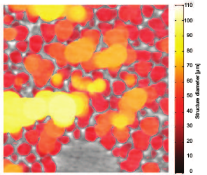
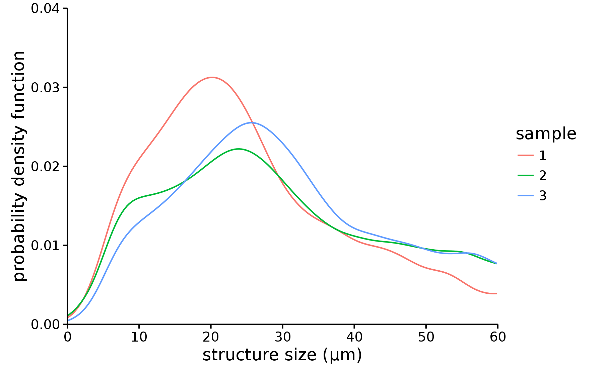
G. Lovrić et al., Automated computer-assisted quantitative analysis of intact murine lungs at the alveolar scale, in press 10.1371/journal.pone.0183979
The final model
sum over the sphere size distribution times the dark field response for each spere size
ground truth
dark-field response
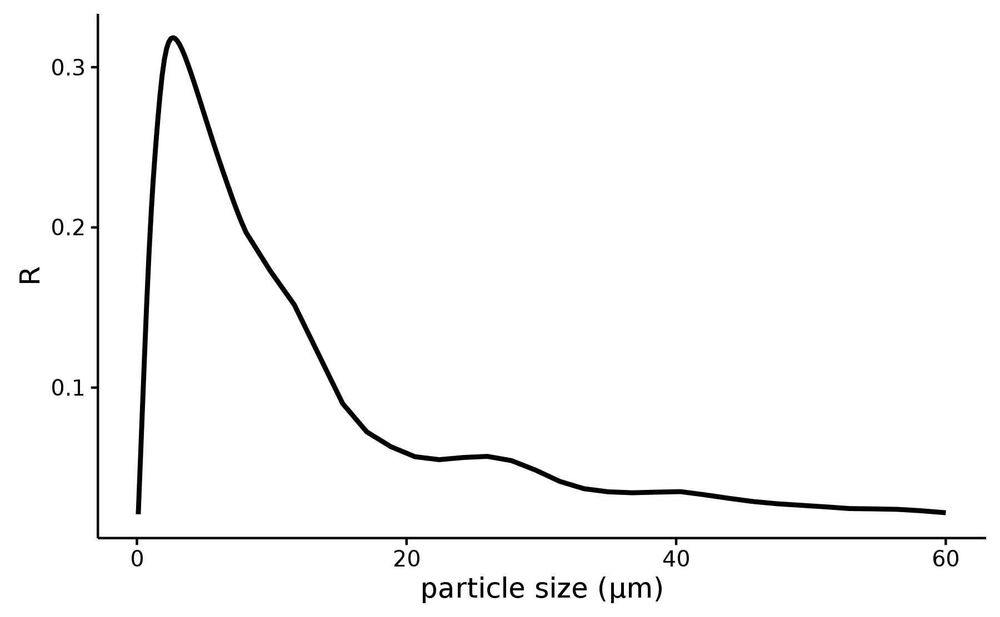Grating interferometry
measure \(R\)
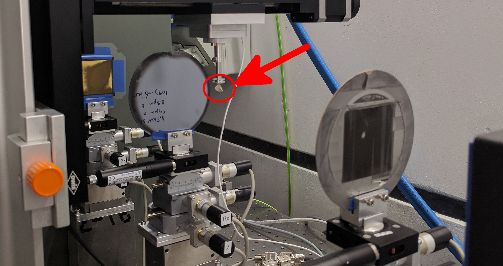
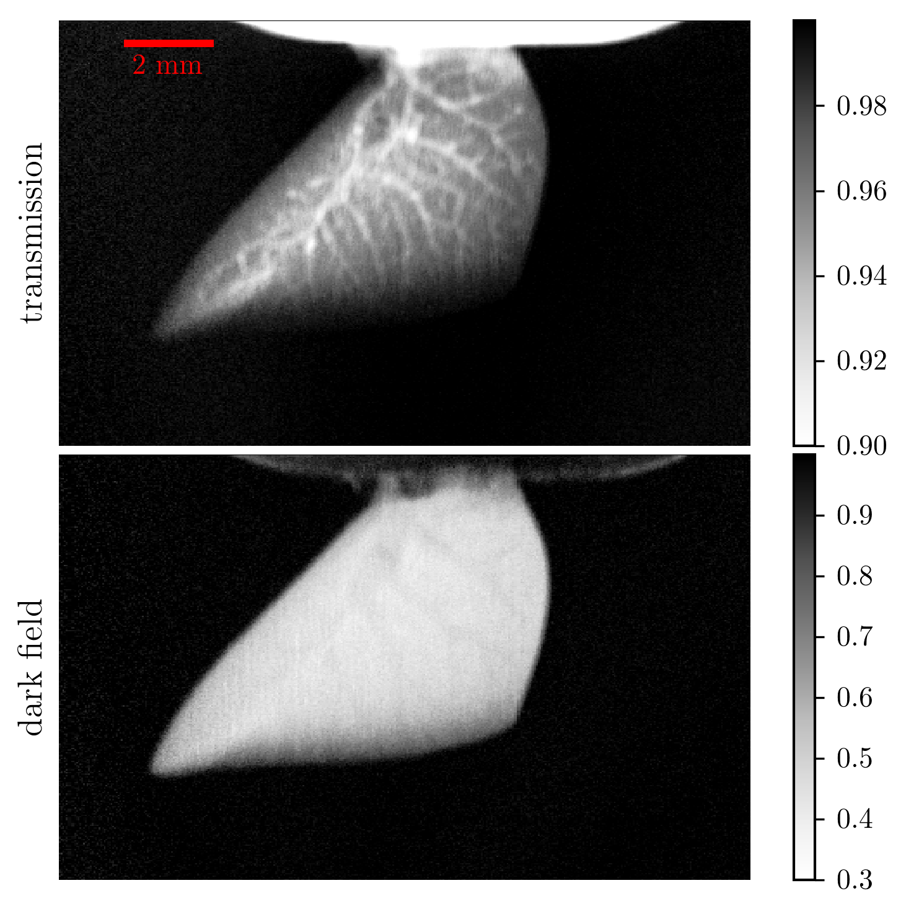
Preliminary validation
| sample | expected | measured |
|---|---|---|
| \(1\) | \(22.2\) | \(21.3 \pm 1.8\) |
| \(2\) | \(13.7\) | \(16.5 \pm 1.6\) |
| \(3\) | \(14.4\) | \(17.7 \pm 1.4\) |
- sample 1 has smaller structures \(\rightarrow\) larger \(R\)
- sample 2/3 similar
- consistent values for the three samples
M. Abis et al., in preparation
Conclusions and outlook
- successful implementation of the dectris santis 0804 CdTe prototype with an application to a known study
- quantitative prediction of dark-field values on a polychromatic source supported by a ground truth from microtomography
- more lung datasets are ready to be analyzed to increase statistics
- an extension of the study is planned with access to mice with emphysema
Acknowledgements
- erc grant erc-2012-stg 310005-PhaseX
- tomcat beamline team
- kit for the grating fabrication
- dectris ltd. for lending and setting up the detector prototype
- thank you for your attention